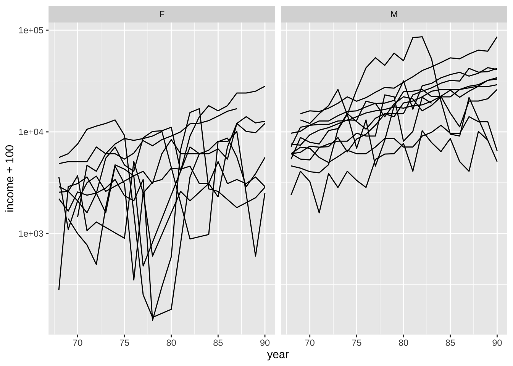
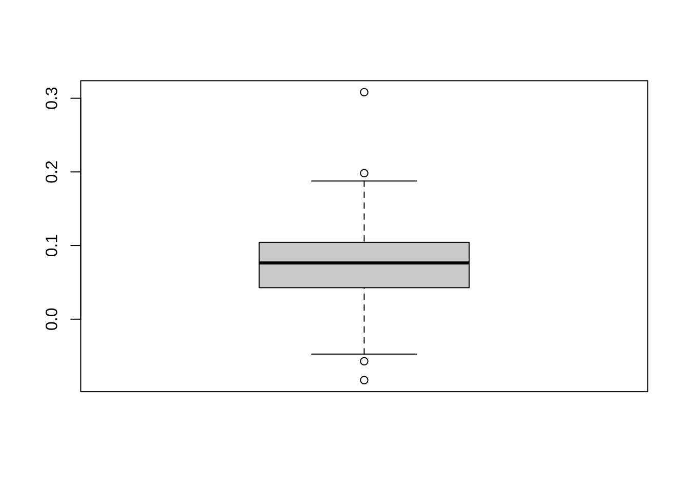

library(tidyverse)
library(ggplot2)
library(faraway)
library(alr4)
library(MASS)
library(knitr)
library(kableExtra)
library(lme4)
library(lmerTest)
library(brms)
library(pbkrtest)
# ggplot2 에서 한글의 사용
library(showtext)
font_add_google("Nanum Pen Script", "nanum")
showtext_auto()13 반복측정자료 실습 1
13.1 필요한 패키지와 함수
source("../R/functions.R")13.2 반복측정자료의 분석
반복측정자료에 대한 분석은 교과서 Faraway (2016) 에서 사용된 psid 데이터프레임을 사용한다.
1968년에 시작된 소득 역학 패널 연구(PSID)는 Hill(1992)에 설명된 미국 개인을 대표하는 표본을 대상으로 한 종단 연구(longitudinal study)이다. 이 연구는 미시간 대학교 사회 연구소의 서베이 리서치 센터에서 수행되며 현재도 계속되고 있다.
현재 8700가구가 연구에 참여하고 있으며 많은 변수가 측정되고 있다. 본 분석에서는 1968년에 25~39세였고 1968년과 1990년 중 최소 11년 동안의 완전한 데이터를 보유한 85명의 가구주로 구성된 이 데이터의 무작위 하위 집합을 분석하기로 선택하였다. 분석에 포함된 변수는 연소득, 성별, 교육 기간, 1968년 나이였습니다:
age:age in 1968educ: years of educationsex: sex of individual, F or Mincome: annual income in dollarsyear: year of observationperson: ID number for individual
data(psid, package="faraway")
head(psid) age educ sex income year person
1 31 12 M 6000 68 1
2 31 12 M 5300 69 1
3 31 12 M 5200 70 1
4 31 12 M 6900 71 1
5 31 12 M 7500 72 1
6 31 12 M 8000 73 1다음 그림은 처음 20명의 소득의 변화를 나타낸 것이다. 같은 직장에 안정적으로 고용되어 있는 사람처럼 소득이 서서히 증가하는 사람이 있음을 알 수 있지만 반대로 어떤 사람들은 소득이 더 불규칙으로 변하는 것도 볼 수 있다.
library(dplyr)
psid20 <- filter(psid, person <= 20)
library(ggplot2)
ggplot(psid20, aes(x=year, y=income))+geom_line()+facet_wrap(~ person)다음은 성별에 따라 소득이 어떻게 다른지 보여줄 수도 있다. 소득은 로그 척도(log scale)로 표현하는 것이 비교를 위하여 적절하다. 이 경우 y=income+100 은 반응변수가 0일 때를 대비하여 100을 더한 것이다.
다음
ggplot(psid20, aes(x=year, y=income+100, group=person)) +
geom_line() +
facet_wrap(~ sex) +
scale_y_log10()
일반적으로 남성의 소득이 더 높고 변동성이 적은 반면, 여성의 소득은 변동성이 더 크지만 더 빠르게 증가하고 있음을 알 수 있다. 첫 번째 주제부터 각 주제에 한 줄을 그을 수 있습니다
13.3 개체별 모형
이제 소득의 로그값을 반응변수로 하여 연도별 소득의 변화를 각 개인에 대하여 선형회귀 직선을 적합해 보자.
ggplot(psid20, aes(x=year, y=income))+
geom_line()+
stat_smooth(method = "lm",se=F,linewidth=0.5)+
facet_wrap(~ person)`geom_smooth()` using formula = 'y ~ x'이 경우 개인별로 회귀직선의 기울기와 절편이 다르므로 개체별 모형이라고 한다. 함수 lmlist 를 이용하여 소득의 로그값을 반응변수로, 연도를 설명변수로 하여 개체별 모형을 적합해 보자. 연도는 실제 연도값(68,…,90) 에서 중간값 78을 뺀 값을 사용한다. 이렇게 하면 회귀직선의 절편은 78년의 소득을 나타내고 회귀직선의 기울기는 1년 당 소득의 증가를 나타낸다.
ml <- lmList(log(income) ~ I(year-78) | person, psid)
intercepts <- sapply(ml,coef)[1,]
slopes <- sapply(ml,coef)[2,]절편과 기울기는 큰 상관관계는 없는 것으로 보이지만 약한 음의 상관계수가 나타났다.
절편과 기울기에 대한 분포를 보기 위하여 상자그림을 그려보면 평균을 중심으로 대칭인 분포를 보이고 있다.
cor(coef(ml)) (Intercept) I(year - 78)
(Intercept) 1.00000000 -0.04850099
I(year - 78) -0.04850099 1.00000000plot(coef(ml),main="intercepts and slopes on drivers: sleep study ")boxplot(intercepts)
boxplot(slopes)

다음 그림은 남여별로 78년의 소득(intercept)을 비교한 그림이다. 여성에 비해 남성의 소득이 더 높다는 사실을 알 수 있다.
psex <- psid$sex[match(1:85,psid$person)]
boxplot(split(intercepts,psex))다음 그림은 남여별로 소득 증가율(slope)을 비교한 그림이다. 남성에 비해 여성의 소득 증가율이 더 높고 가변적이라는 것을 알 수 있다.
boxplot(split(slopes,psex))남여 두 그룹간에 절편과 기울기의 차이가 있는지 다음과 같이 t-검정을 수행할 수 있다.
78년의 소득과 증가율 모두 남여간에 유의한 차이다 있다는 것을 알 수 있다.
t.test(slopes[psex=="M"],slopes[psex=="F"])
Welch Two Sample t-test
data: slopes[psex == "M"] and slopes[psex == "F"]
t = -2.3786, df = 56.736, p-value = 0.02077
alternative hypothesis: true difference in means is not equal to 0
95 percent confidence interval:
-0.05916871 -0.00507729
sample estimates:
mean of x mean of y
0.05691046 0.08903346 t.test(intercepts[psex=="M"],intercepts[psex=="F"])
Welch Two Sample t-test
data: intercepts[psex == "M"] and intercepts[psex == "F"]
t = 8.2199, df = 79.719, p-value = 3.065e-12
alternative hypothesis: true difference in means is not equal to 0
95 percent confidence interval:
0.8738792 1.4322218
sample estimates:
mean of x mean of y
9.382325 8.229275 13.4 임의계수 모형
위와 같이 각 개체에 대한 회귀모형은 다음 설명변수들(성별, 교육기간 등)의 효과를 통합적으로 분석하기 힘들다, 이제 개인의 효과와 인구사회핫적 설명변수들을 동시에 고려할 수 있는 선형혼합모형을 고려해보자. 이 경우 연도의 회귀계수에 임의효과를 포함한 임의계수모형을 고려한다.
\[ \log~ (\text{income})_{ij} = (\beta_0 + b_{0i}) + (\beta_1 + b_{1i})~ \text{year}_j + \beta_2 ~\text{sex}_j + \beta_3 ~\text{age}_j + \beta_4 ~ \text{edu}_j + \beta_{12} (\text{year} \times \text{sex})_j + e_{ij} \tag{13.1}\]
\[ {\pmb b}_i = \begin{bmatrix} b_{0i} \\ b_{1i} \\ \end{bmatrix} \sim N \left ( \begin{bmatrix} 0 \\ 0 \\ \end{bmatrix} , \begin{bmatrix} \sigma^2_{b0} & \rho \sigma_{b0} \sigma_{b1}\\ \rho \sigma_{b0} \sigma_{b1} & \sigma^2_{b1} \\ \end{bmatrix} \right ), \quad \sigma_e \sim N(0, \sigma^2_e) \]
이제 psid 자료에 다음과 같은 임의계수 모형을 적합해 보자.
psid$cyear <- psid$year-78
mmod <- lmer(log(income) ~ cyear*sex +age+educ+(cyear|person), psid)
summary(mmod)Linear mixed model fit by REML. t-tests use Satterthwaite's method [
lmerModLmerTest]
Formula: log(income) ~ cyear * sex + age + educ + (cyear | person)
Data: psid
REML criterion at convergence: 3819.8
Scaled residuals:
Min 1Q Median 3Q Max
-10.2310 -0.2134 0.0795 0.4147 2.8254
Random effects:
Groups Name Variance Std.Dev. Corr
person (Intercept) 0.2817 0.53071
cyear 0.0024 0.04899 0.19
Residual 0.4673 0.68357
Number of obs: 1661, groups: person, 85
Fixed effects:
Estimate Std. Error df t value Pr(>|t|)
(Intercept) 6.674211 0.543323 81.176969 12.284 < 2e-16 ***
cyear 0.085312 0.008999 78.915123 9.480 1.14e-14 ***
sexM 1.150312 0.121292 81.772542 9.484 8.06e-15 ***
age 0.010932 0.013524 80.837433 0.808 0.4213
educ 0.104209 0.021437 80.722317 4.861 5.65e-06 ***
cyear:sexM -0.026306 0.012238 77.995359 -2.150 0.0347 *
---
Signif. codes: 0 '***' 0.001 '**' 0.01 '*' 0.05 '.' 0.1 ' ' 1
Correlation of Fixed Effects:
(Intr) cyear sexM age educ
cyear 0.020
sexM -0.104 -0.098
age -0.874 0.002 -0.026
educ -0.597 0.000 0.008 0.167
cyear:sexM -0.003 -0.735 0.156 -0.010 -0.011위의 결과에 대하여 고정 효과부터 살펴보자. 교육 기간이 1년 더 늘어날 때마다 소득이 약 10% 증가하는 것을 알 수 있다. 연령은 유의하지 않은 것으로 나타난다.
소득이 연도별로 변하는 증가율은 여성의 경우 소득은 연간 약 8.5% 증가하는 반면 남성의 경우 연간 약 8.5 - 2.6 = 5.9% 증가한다. 이 데이터의 경우 남성의 소득이 \(\exp(1.15) = 3.16\) 배 더 높다는 것을 알 수 있다.
이제 임의효과에 대한 추정 결과를 보자.
VarCorr(mmod) Groups Name Std.Dev. Corr
person (Intercept) 0.530713
cyear 0.048988 0.187
Residual 0.683574 절편과 기울기의 개체별 변동은 표준편차 단위로 각각 다음과 같이 나타난다.
\[ \hat \sigma_{b0} = 0.5307125, \quad \hat \sigma_{b1} = 0.0489883, \quad \hat \sigma_e = 0.683574 \]
소득 증가(기울기)의 변동은 상대적으로 작은 반면 개인 간 전체 소득(절편)의 변동은 상당히 크다는 것을 알 수 있다. 또한 잔여 변동(오차항)이 크다는 점을 고려하면 소득의 연도별 변동이 크다는 것을 알 수 있다.
또한 절편과 기울기의 상관계수는 0.1874426 로서 작게 나타나는 것을 알 수 있다.
연도와 성별 간의 상호작용은 식 13.1 의 임의계수모형에서 가장 복잡한 항이므로 통계적으로 유의한 지 검정을 해보자. 아래 결과에 따라서 연도와 성별 간의 상호작용 항은 약간 유의미하므로 이 항을 제거하여 모델을 단순화하는 것이 타당하지 않다는 것을 알 수 있다. 여성 소득이 남성 소득보다 빠르게 증가하고 있다.
\[ H_0 : \beta_{12} = 0 \quad \text{vs.} \quad H_1 : \beta_{12} \ne 0 \]
mmod <- lmer(log(income) ~ cyear*sex +age+educ+(cyear|person),psid, REML=FALSE)
mmodr <- lmer(log(income) ~ cyear + sex +age+educ+(cyear|person),psid, REML=FALSE)
anova(mmod,mmodr)Data: psid
Models:
mmodr: log(income) ~ cyear + sex + age + educ + (cyear | person)
mmod: log(income) ~ cyear * sex + age + educ + (cyear | person)
npar AIC BIC logLik deviance Chisq Df Pr(>Chisq)
mmodr 9 3808.1 3856.8 -1895.0 3790.1
mmod 10 3805.5 3859.6 -1892.7 3785.5 4.6245 1 0.03152 *
---
Signif. codes: 0 '***' 0.001 '**' 0.01 '*' 0.05 '.' 0.1 ' ' 1참고로 아래에서 함수 KRmodcomp를 사용한 가설 검정은 Kenward-Roger 수정 F-검정으로 위에서 함수 anova 를 이용한 일반적인 가능도비 검정에 대하여 자유도를 수정하여 검정력을 높인 것이다.
KRmodcomp(mmod,mmodr)large : log(income) ~ cyear + sex + age + educ + (cyear | person) + cyear:sex
small : log(income) ~ cyear + sex + age + educ + (cyear | person)
stat ndf ddf F.scaling p.value
Ftest 4.6142 1.0000 81.3279 1 0.03468 *
---
Signif. codes: 0 '***' 0.001 '**' 0.01 '*' 0.05 '.' 0.1 ' ' 1